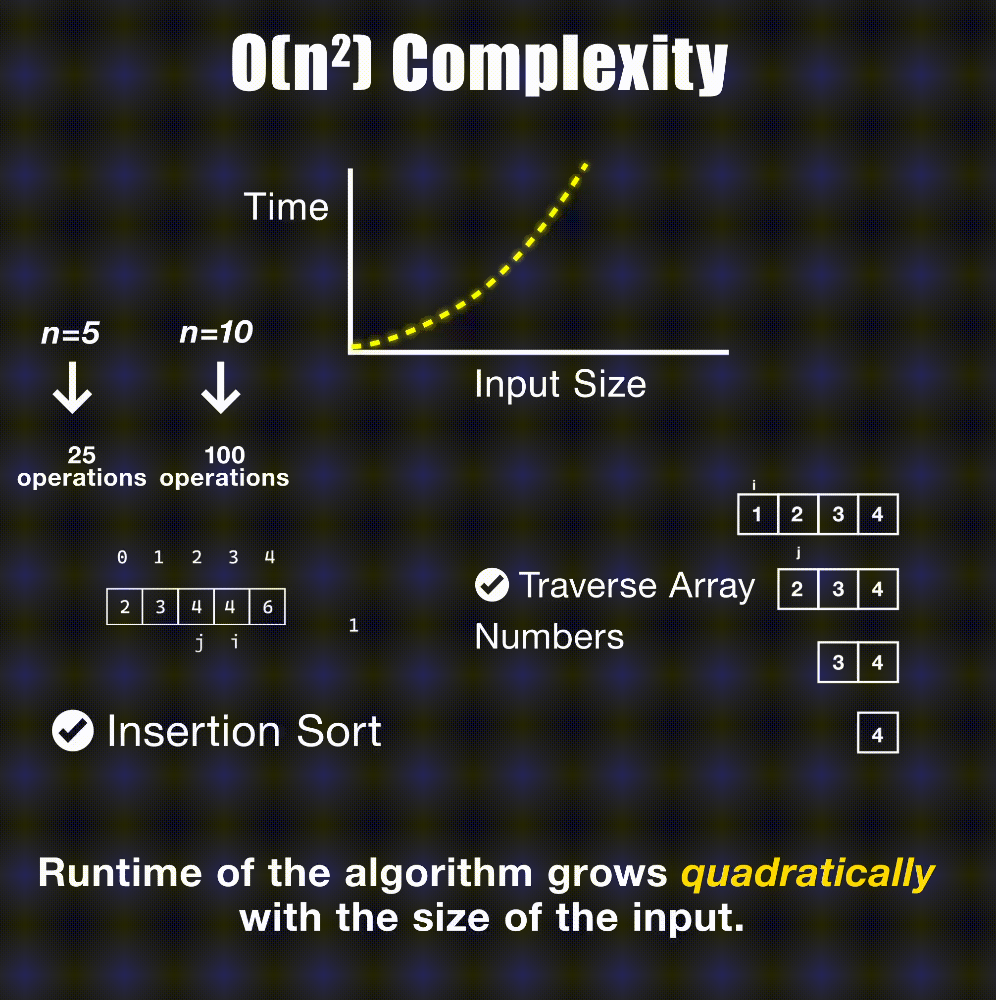

Big O notation describes how the runtime or space usage of an algorithm grows with the size of its input. It’s a language-agnostic way to compare solutions and reason about performance at scale.
Why it matters
- Predict performance as inputs grow
- Choose data structures and algorithms wisely
- Focus on scalability, not exact milliseconds
How to read Big O
- Drop constants: O(2n) → O(n), O(n + 100) → O(n)
- Keep the dominant term: O(n2 + n) → O(n2)
- Worst vs Average vs Best: Unless specified, Big O often refers to the worst-case.
- Amortized: Average cost over many operations (e.g., dynamic array push)
Common growth rates
| Class | Big O | Example |
|---|---|---|
| Constant | O(1) | Array indexing by position |
| Logarithmic | O(log n) | Binary search in a sorted array |
| Linear | O(n) | Traverse all elements |
| Linearithmic | O(n log n) | Merge sort, quicksort (avg) |
| Quadratic | O(n2) | Nested loops over same input |
| Linear Two Variables | O(N*M) | 2D matrix traversal |
| Exponential | O(2n) | Naive subset generation |
| Factorial | O(n!) | Permutations of n items |
Quick examples
- Array access: Read by index → O(1)
- Scan array: Sum all values → O(n)
- Binary search: Halve the search space each step → O(log n)
- Merge sort: Divide + merge → O(n log n)
- Two nested loops: Compare each pair → O(n2)
Amortized O(1): Appending to a dynamic array is O(1) on average, even though occasional resizes take O(n). The average cost over many appends is constant.
Visual examples
Here's how different time complexities look in action:
O(1) - Constant Time
// Accessing array element by index - O(1)
int getElement(int arr[], int index) {
return arr[index];
}// Accessing array element by index - O(1)
public int getElement(int[] arr, int index) {
return arr[index];
}# Accessing array element by index - O(1)
def get_element(arr, index):
return arr[index]O(log n) - Logarithmic Time
// Binary search in sorted array - O(log n)
int binarySearch(int arr[], int size, int target) {
int left = 0, right = size - 1;
while (left <= right) {
int mid = left + (right - left) / 2;
if (arr[mid] == target) return mid;
if (arr[mid] < target) left = mid + 1;
else right = mid - 1;
}
return -1;
}// Binary search in sorted array - O(log n)
public int binarySearch(int[] arr, int target) {
int left = 0, right = arr.length - 1;
while (left <= right) {
int mid = left + (right - left) / 2;
if (arr[mid] == target) return mid;
if (arr[mid] < target) left = mid + 1;
else right = mid - 1;
}
return -1;
}# Binary search in sorted array - O(log n)
def binary_search(arr, target):
left, right = 0, len(arr) - 1
while left <= right:
mid = left + (right - left) // 2
if arr[mid] == target:
return mid
elif arr[mid] < target:
left = mid + 1
else:
right = mid - 1
return -1O(n) - Linear Time
// Linear search through array - O(n)
int linearSearch(int arr[], int size, int target) {
for (int i = 0; i < size; i++) {
if (arr[i] == target) {
return i;
}
}
return -1;
}// Linear search through array - O(n)
public int linearSearch(int[] arr, int target) {
for (int i = 0; i < arr.length; i++) {
if (arr[i] == target) {
return i;
}
}
return -1;
}# Linear search through array - O(n)
def linear_search(arr, target):
for i in range(len(arr)):
if arr[i] == target:
return i
return -1O(n log n) - Linearithmic Time
// Merge sort - O(n log n)
void mergeSort(int arr[], int left, int right) {
if (left < right) {
int mid = left + (right - left) / 2;
mergeSort(arr, left, mid);
mergeSort(arr, mid + 1, right);
merge(arr, left, mid, right);
}
}// Merge sort - O(n log n)
public void mergeSort(int[] arr, int left, int right) {
if (left < right) {
int mid = left + (right - left) / 2;
mergeSort(arr, left, mid);
mergeSort(arr, mid + 1, right);
merge(arr, left, mid, right);
}
}# Merge sort - O(n log n)
def merge_sort(arr):
if len(arr) <= 1:
return arr
mid = len(arr) // 2
left = merge_sort(arr[:mid])
right = merge_sort(arr[mid:])
return merge(left, right)O(n²) - Quadratic Time

Nested loops - comparing each element with every other element
// Bubble sort - O(n²)
void bubbleSort(int arr[], int n) {
for (int i = 0; i < n - 1; i++) {
for (int j = 0; j < n - i - 1; j++) {
if (arr[j] > arr[j + 1]) {
// Swap elements
int temp = arr[j];
arr[j] = arr[j + 1];
arr[j + 1] = temp;
}
}
}
}// Bubble sort - O(n²)
public void bubbleSort(int[] arr) {
int n = arr.length;
for (int i = 0; i < n - 1; i++) {
for (int j = 0; j < n - i - 1; j++) {
if (arr[j] > arr[j + 1]) {
// Swap elements
int temp = arr[j];
arr[j] = arr[j + 1];
arr[j + 1] = temp;
}
}
}
}# Bubble sort - O(n²)
def bubble_sort(arr):
n = len(arr)
for i in range(n - 1):
for j in range(n - i - 1):
if arr[j] > arr[j + 1]:
# Swap elements
arr[j], arr[j + 1] = arr[j + 1], arr[j]O(N*M) - Linear with Two Variables

// Process 2D matrix - O(N*M)
void processMatrix(int matrix[][], int rows, int cols) {
for (int i = 0; i < rows; i++) {
for (int j = 0; j < cols; j++) {
// Process each element
printf("%d ", matrix[i][j]);
}
}
}// Process 2D matrix - O(N*M)
public void processMatrix(int[][] matrix) {
int rows = matrix.length;
int cols = matrix[0].length;
for (int i = 0; i < rows; i++) {
for (int j = 0; j < cols; j++) {
// Process each element
System.out.print(matrix[i][j] + " ");
}
}
}# Process 2D matrix - O(N*M)
def process_matrix(matrix):
rows = len(matrix)
cols = len(matrix[0]) if rows > 0 else 0
for i in range(rows):
for j in range(cols):
# Process each element
print(matrix[i][j], end=" ")O(2ⁿ) - Exponential Time

// Fibonacci (naive approach) - O(2^n)
int fibonacci(int n) {
if (n <= 1) {
return n;
}
return fibonacci(n - 1) + fibonacci(n - 2);
}// Fibonacci (naive approach) - O(2^n)
public int fibonacci(int n) {
if (n <= 1) {
return n;
}
return fibonacci(n - 1) + fibonacci(n - 2);
}# Fibonacci (naive approach) - O(2^n)
def fibonacci(n):
if n <= 1:
return n
return fibonacci(n - 1) + fibonacci(n - 2)Space complexity
Space complexity measures additional memory an algorithm uses relative to input size. For example, in-place operations often use O(1) extra space, while algorithms that build auxiliary structures may use O(n) space.
Cheat sheet
| Operation | Time | Notes |
|---|---|---|
| Array index access | O(1) | Direct addressing |
| Array traversal | O(n) | Visit each element once |
| Binary search (sorted) | O(log n) | Halves search space |
| Efficient sorts | O(n log n) | Merge sort, quicksort (avg) |
| Naive double loop | O(n2) | All pairs comparisons |
Takeaways
- Think in growth rates, not exact times
- Prefer lower-order complexities for scalability
- Consider both time and space; constraints matter